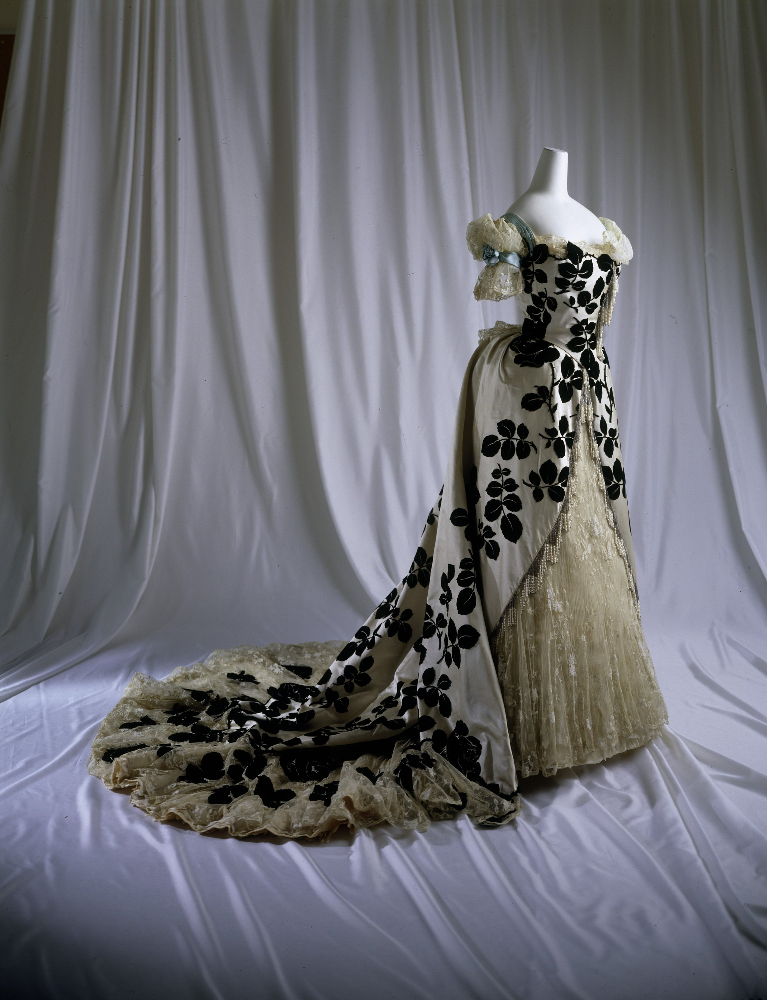

花被抽走颜色之后，轮廓反而说得更响。
合体衣身与张开裙摆组成三角；前裙斜切，拖尾反向延伸，视线沿肩—腰—裙摆走成 S 形。
暖象牙和近黑承担 95% 画面；珠光灰补入中间调。高明度对比制造图形冲击。
丝面留下柔亮带，黑花吸光，玻璃珠碎成针尖高光；三种反光速度让静态图案获得时间感。
黑玫瑰跨越衣身、外裙与拖尾；尺度与疏密不断变化。珠穗沿斜边下垂，把锋利开口变成可见的重力节拍。
事实：馆藏署名 House of Worth，未列具体个人设计师。1895 年后，Jean-Philippe Worth 负责工坊设计方向。
观点：它撤掉玫瑰的红，
让华丽带上一丝悼念。
馆藏将黑玫瑰与世纪末文学式忧郁相连。我的视觉判断是：黑白让奢华停止炫耀，变成更安静、更持久的张力。
Evening dress，House of Worth，法国，1898–1900，丝、棉、玻璃；The Metropolitan Museum of Art，1976.258.2a, b。原图来自馆藏 Open Access，作品页标记 Public Domain。图片版权归原作者及适用权利人；事实参考馆藏记录与馆方专题文章；赏析及近似色值：每日艺术。转载或商用前请复核来源页和所在地法律。